|
|
| Little Linux systems for projects and products |
(Updated Jun. 25, 2005)
Are you looking for small pre-built systems for implementing your Linux-based projects or products? Look no further. In response to numerous inquiries, LinuxDevices.com has assembled a reference list of small systems that can serve as ready-made platforms for prototyping applications, or as the basis of application-specific Linux-based systems and devices. The style, performance, and costs of these systems vary greatly.
Here's what we've come up with so far (in alphabetical order) . . .
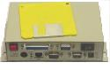 Advantage Business Computer Systems: TCSX-1 -- [May 18, 2001] -- This very small and fairly rugged system was designed to serve as a thin client using the LTSP (Linux terminal server project) version of Linux, but can be used in numerous other diskless (or ROMdisk-based) embedded Linux apps. The CPU is an STPC 586-class processor and it provides interfaces for PS2 keyboard/mouse, floppy & hard drives, serial & parallel ports,10/100 Mbps Ethernet, and a 69000 based display controller.
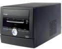A-Open barebones system -- [May 12, 2004] -- This build-it-yourself PC comes with a built-in option to boot into an embedded media environment based on embedded Linux.
Apple MiniMac -- [Mar. 20, 2005] -- Apple's Mac Mini can be used as an embedded Linux platform. It has a fast processor and lots of connectors, it's inexpensive, and it supports a variety of free development tools. Best for kiosks and one-off projects.
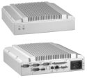Axiomtek eBox 746-EFL -- [Mar. 21, 2005] -- A passively cooled embedded PC based on a Via Eden processor. It adds a mid-line model to Axiomtek's eBox series, which also includes models based on Pentium M and AMD Geode processors. Like other eBox models, the 746-EFL supports wall-mount or DIN rail mounting, and targets industrial embedded applications.
Axiomtek eBOX745A-EFL300 -- [Nov. 24, 2004] -- An ultra low power fanless embedded platform powered by an AMD Geode 300MHz processor. For fanless designs, this platform operates noiselessly with high reliability. This device can work from -25 ~ 60C to meet wide temperature range industrial applications, in markets such as POS, Kiosk, ATM, Thin Server, diskless workstation, building automation, and tour bus display.
Axis: Device Server Platform -- [May 2, 2002] -- A highly compact enclosed version of the Axis ETRAX Developer Board, which is based on a 100 MHz 32-bit RISC CPU with MMU (the ETRAX 100LX system-on-chip) and provides controllers for 10/100 Mbit/sec Ethernet, 2 sync and 4 async serial, dual parallel, 2 USB, SCSI, and EIDE. External connectors are provided for Ethernet, COM1, COM2, and RS-485.
Buffalo Technologies Kuro Box -- [Oct. 4, 2004] -- An inexpensive PowerPC development platform roughly the size of a toaster, the Kuro Box sells for $160 and comes with Linux and a variety of open source software.
C2Central: UIB -- ]May 12, 2004] -- [Feb. 7, 2001] -- With its unusual appearance and small size, this little system offers some interesting possibilities for highly distinctive Linux-based devices. The device is based on an Acer Labs (ALi) x86 compatible CPU and includes 8MB RAM, an 8MB DiskOnChip, a 2x16 LCD display, 2 LEDs, and 2 programmable pushbuttons. Some versions also include a built-in 33.6K bps modem
 Concept Distribution miniPC -- [Jun. 15, 2005] -- A tiny Geode-based PC available with a choice of Linux operating systems. The "miniPC" measures 5.5 x 5.1 x 1.4 inches (13 x 14 x 3.5cm), and is available with thin-client and general-purpose Linux OSes. Details Concept Distribution miniPC -- [Jun. 15, 2005] -- A tiny Geode-based PC available with a choice of Linux operating systems. The "miniPC" measures 5.5 x 5.1 x 1.4 inches (13 x 14 x 3.5cm), and is available with thin-client and general-purpose Linux OSes. Details
 Cyclades TS100 -- [Aug. 7, 2003] -- A mere 2.8 x 3.4 x 1.2 inches in size, the TS100 provides interfaces to 10/100-BaseT Ethernet and RS232/RS485 serial, and is based on a dual-core Motorola MPC855T "PowerQUICC Integrated Communications Processor" with 16MB of SDRAM and 4MB of Flash memory. The diminutive server runs a Linux kernel 2.2.14, along with a variety of open source utilities including the GoAhead webserver (for the Web Management Interface), Portslave, OpenSSH 3.1, crontab, Busybox, nettools, rsyncm, and others. Cyclades TS100 -- [Aug. 7, 2003] -- A mere 2.8 x 3.4 x 1.2 inches in size, the TS100 provides interfaces to 10/100-BaseT Ethernet and RS232/RS485 serial, and is based on a dual-core Motorola MPC855T "PowerQUICC Integrated Communications Processor" with 16MB of SDRAM and 4MB of Flash memory. The diminutive server runs a Linux kernel 2.2.14, along with a variety of open source utilities including the GoAhead webserver (for the Web Management Interface), Portslave, OpenSSH 3.1, crontab, Busybox, nettools, rsyncm, and others.
 Fujitsu Siemens Futro S thin client -- [Jul. 7, 2004] -- Fujitsu Siemens has launched a line of solid-state thin clients that use just 25 watts, or 80 percent less power than PCs. The Futro S clients run embedded Linux on Transmeta processors, are no larger than medium-sized books. Fujitsu Siemens Futro S thin client -- [Jul. 7, 2004] -- Fujitsu Siemens has launched a line of solid-state thin clients that use just 25 watts, or 80 percent less power than PCs. The Futro S clients run embedded Linux on Transmeta processors, are no larger than medium-sized books.
GCT-Allwell: Set-top Boxes -- [Jun. 16, 2001] -- This Taiwan-manufactured a family of small "pizza-box" style systems make great platforms for Linux-based set-top boxes, firewall/router appliances, thin clients, and other projects and products. They are basically PC compatible architectures implemented with a minimum of components and a full set of interfaces (including Ethernet and video), offered at very reasonable prices. Be sure to read this how-to article about using one of these systems in a typical Linux-based project.
 Intrinsyc: CerfCube -- [Jul. 11, 2003] -- This miniscule Linux system occupies just 0.015 cubic foot. Inside the three cast aluminum cube is a tiny SBC (available separately as an OEM product). The most recent version features a IBM PowerPC 405EP embedded processor, 32MB of Flash Memory, 32MB of SDRAM, a 10/100 Ethernet port (expandable to two), two serial ports, programmable digital I/O, mini-PCI cards bay and JTAG. Intrinsyc: CerfCube -- [Jul. 11, 2003] -- This miniscule Linux system occupies just 0.015 cubic foot. Inside the three cast aluminum cube is a tiny SBC (available separately as an OEM product). The most recent version features a IBM PowerPC 405EP embedded processor, 32MB of Flash Memory, 32MB of SDRAM, a 10/100 Ethernet port (expandable to two), two serial ports, programmable digital I/O, mini-PCI cards bay and JTAG.
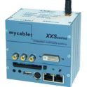Mycable XXS1500 -- [Jan. 19, 2004] -- The XXS1500 embedded Linux system is based on AMD's Alchemy Au1500 MIPS23 architecture system-on-chip processor. The 3-watt system is fully supported by the linux-mips kernel tree and includes 64 or 128 MByte SDRAM, 16 MByte Flash, 2 x Fast Ethernet, USB 1.1 Host, 2 x serial RS232, CompactFlash Slot, Stereo Audio in/out (AC97-codec), PCI Rev. 2.2 (66 MHz) on XXS PCI-combined connector, and USB 1.1 Device on PCI-combined connector. Several expansion modules, as well as a smaller case, are also available for the XXS1500.
Nexedi: OpenBrick -- [Jul. 15, 2002] -- A compact (7.1 x 4.6 x 1.6 in.), fanless system based on a PC/104-expandable single-board computer with a 300MHz Geode processor and up to 128MB RAM. I/O includes PS/2 mouse and keyboard ports, parallel port, dual-USB ports, serial port, SVGA and TV video, Ethernet, and both CompactFlash and PCMCIA expansion slots.
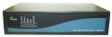Nimble PC -- [Jul. 6, 2004] -- Nimble Microsystems has unveiled a small, low-power, SuperH-based fanless computer that comes with Linux, supports PoE (power-over-Ethernet), and has two Ethernet ports and two mini-PCI slots suitable for 802.11x wireless cards or other internal expansion. ...
SnapGear: SecureEdge -- [May 20, 2004] -- These highly compact and smart-looking Linux-based platforms are implemented in a range of processors including x86, Motorola ColdFire, and more. I/O includes USB, 10/100 Mbps Ethernet, serial ports, PCMCIA, IDE and others. SnapGear sells these systems as development platforms as a starter for their complete custom design solutions including turn-key manufacturing and fulfillment.
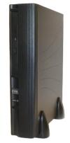The NIC Company: NIC -- [Jun. 8, 2001] -- This "thin client" system is packaged in a box similar to the GCT/Allwell ones (mentioned above), but is sold in the US at a very reasonable price ($200) complete with Linux loaded from a built-in CDROM drive. The system contains a 266 MHz MediaGX processor, 64 MB of memory, sound, 10/100 Mbps Ethernet, modem, two USB ports, and a 4 MB Flash disk. With its low price and high integration, the NIC should make a great platform for many custom Linux-based projects or products.
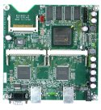PC Engines WRAP -- [Mar. 22, 2005] -- The PC Engines WRAP is a small, inexpensive Geode-based SBC (single-board computer), also available with a case, that is popular with embedded Linux router and firewall enthusiasts. The WRAP supports a number network-oriented Linux distributions, including free distributions such as Monowall, LEAF and Locustworld MeshAP (MITC port) have been ported to WRAP. Commercial offerings include StarOS and Ikarus OS.
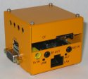Personal Media Corp. Teacube -- [Jun. 18, 2004] -- This PC/AT compatible system is verified with Linux, but comes pre-installed with a BTRON compatible realtime kernel and various applications. It is intended as a T-Engine demonstration platform, but is also available direct for kiosk applications. Linux tools are available for the Teacube.
Sun JBox -- [Jun. 24, 2005] -- Sun Microsystems, Via Technologies, and iGoLogic teamed up on the JBox, an x86-based development kit for embedded applications based on Sun's Java 2, Standard Edition (J2SE). The compact, fully packaged system is supplied with a choice of Linux or Sun's Solaris operating system.
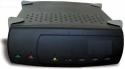Team ASA: Npower Server -- [Jun. 21, 2001] -- Here's a system that matches the dimensions of a 5.25-inch disk drive. This one is based on the new Intel XScale processor at up to 733 MHz clock rates, and includes 128 MB of SDRAM and 4MB of Flash ROM, a built-in high performance SCSI hard drive, and a Gigabit Ethernet LAN interface. The system's internal single-board computer is also available as a product.
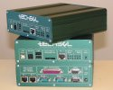 Techsol Gateway 38-000010-210 -- [Nov. 8, 2004] -- Techsol is offering a compact, low-powered, Linux computer based on a CPU module available from 50 to 600MHz. Techsol's Gateway 38-000010-210 uses the company's 32-bit ARM-based Medallion CPU modules preinstalled with a full embedded Linux OS. It targets industrial control and monitoring, in-vehicle and solar-powered systems, communications concentrators, translators, and data loggers.
 Total Impact: briQ -- [Jan. 22, 2001] -- Here's another system that matches the dimensions of a 5.25-inch disk drive. The briQ is based on a PowerPC G3 or G4 processor and is equipped with up to 512MB of SDRAM, a 10/100 Mbit Ethernet port, and an internal hard drive. The system's internal single-board computer is also available as a product. Total Impact: briQ -- [Jan. 22, 2001] -- Here's another system that matches the dimensions of a 5.25-inch disk drive. The briQ is based on a PowerPC G3 or G4 processor and is equipped with up to 512MB of SDRAM, a 10/100 Mbit Ethernet port, and an internal hard drive. The system's internal single-board computer is also available as a product.
Prefer to package an SBC in your own enclosure?
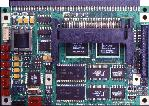Another possibility is to package a small "Linux-friendly single-board computer" (SBC) in your own enclosure. You can find info on all sorts of compact, Linux-friendly SBCs in The Linux-friendly SBC Quick Reference Guide.
Return to top of guide
Talk back! Do you have questions or comments on this article? talkback here
 |
|
|
|
|
|
|
|
 Use of this site is governed by our
Terms of Use
and Privacy Policy.
Except where otherwise specified, the contents of this site are copyright © 1999-2005
Ziff Davis Publishing Holdings Inc.
All Rights Reserved. Reproduction in whole or in part without permission is prohibited. Linux is a registered trademark of Linus Torvalds. All other marks are the property of their respective owners.
Use of this site is governed by our
Terms of Use
and Privacy Policy.
Except where otherwise specified, the contents of this site are copyright © 1999-2005
Ziff Davis Publishing Holdings Inc.
All Rights Reserved. Reproduction in whole or in part without permission is prohibited. Linux is a registered trademark of Linus Torvalds. All other marks are the property of their respective owners.


 news feed
news feed